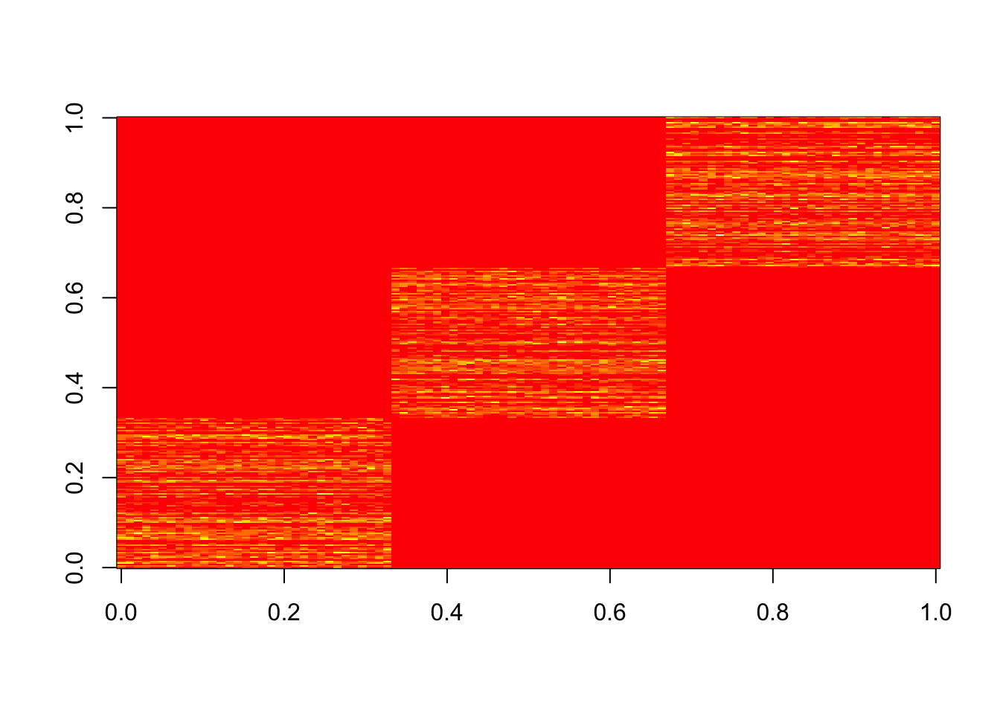
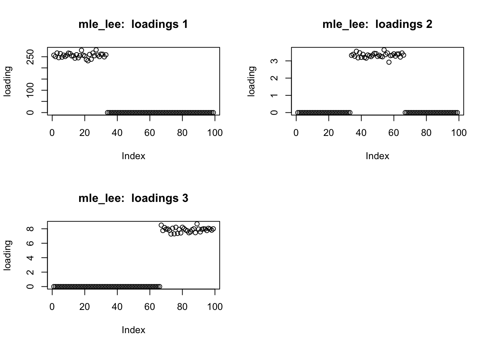
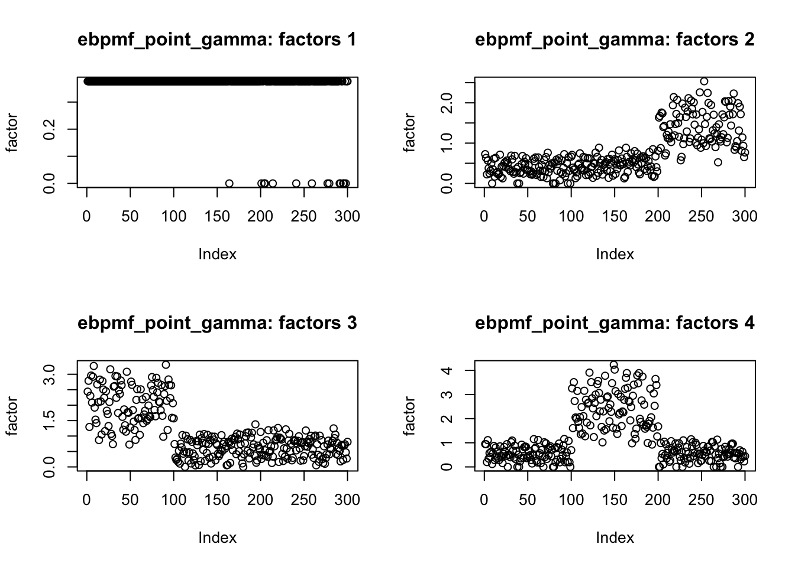

nmf_sparse
zihao12
2019-10-30
Last updated: 2020-01-18
Checks: 6 1
Knit directory: ebpmf_demo/
This reproducible R Markdown analysis was created with workflowr (version 1.5.0). The Checks tab describes the reproducibility checks that were applied when the results were created. The Past versions tab lists the development history.
Great! Since the R Markdown file has been committed to the Git repository, you know the exact version of the code that produced these results.
Great job! The global environment was empty. Objects defined in the global environment can affect the analysis in your R Markdown file in unknown ways. For reproduciblity it’s best to always run the code in an empty environment.
The command set.seed(20190923) was run prior to running the code in the R Markdown file. Setting a seed ensures that any results that rely on randomness, e.g. subsampling or permutations, are reproducible.
Great job! Recording the operating system, R version, and package versions is critical for reproducibility.
- unnamed-chunk-11
- unnamed-chunk-4
- unnamed-chunk-5
To ensure reproducibility of the results, delete the cache directory nmf_sparse10_cache and re-run the analysis. To have workflowr automatically delete the cache directory prior to building the file, set delete_cache = TRUE when running wflow_build() or wflow_publish().
Great job! Using relative paths to the files within your workflowr project makes it easier to run your code on other machines.
Great! You are using Git for version control. Tracking code development and connecting the code version to the results is critical for reproducibility. The version displayed above was the version of the Git repository at the time these results were generated.
Note that you need to be careful to ensure that all relevant files for the analysis have been committed to Git prior to generating the results (you can use wflow_publish or wflow_git_commit). workflowr only checks the R Markdown file, but you know if there are other scripts or data files that it depends on. Below is the status of the Git repository when the results were generated:
Ignored files:
Ignored: .RData
Ignored: .Rhistory
Ignored: .Rproj.user/
Ignored: analysis/anchor_word_model_swimmer_cache/
Ignored: analysis/compare_GH_cache/
Ignored: analysis/ebpm_two_gamma_debug2_cache/
Ignored: analysis/nmf_anchor_word3_cache/
Ignored: analysis/nmf_anchor_word4_cache/
Ignored: analysis/nmf_sparse10_cache/
Ignored: analysis/nmf_sparse8_cache/
Ignored: analysis/nmf_sparse9_cache/
Untracked files:
Untracked: Rplot.png
Untracked: Untitled.Rmd
Untracked: Untitled.html
Untracked: analysis/.ipynb_checkpoints/
Untracked: analysis/Experiment_ebpmf_simple.Rmd
Untracked: analysis/anchor_word_model1.Rmd
Untracked: analysis/anchor_word_model2.Rmd
Untracked: analysis/anchor_word_model3.Rmd
Untracked: analysis/debug_ebpmf_two_gamma.Rmd
Untracked: analysis/demo_ebpmf_beta_gamma.Rmd
Untracked: analysis/demo_ebpmf_two_gamma2.Rmd
Untracked: analysis/demo_ebpmf_two_gamma_cache_old/
Untracked: analysis/draft.Rmd
Untracked: analysis/ebpm_gamma_mixture_experiment.Rmd
Untracked: analysis/ebpm_two_gamma_test.R
Untracked: analysis/ebpm_two_gamma_test.Rmd
Untracked: analysis/ebpmf_demo.Rmd
Untracked: analysis/ebpmf_rank1_demo2.Rmd
Untracked: analysis/ebpmf_two_gamma_debug.Rmd
Untracked: analysis/investigate_nmf_sparse.Rmd
Untracked: analysis/nmf_anchor_word4.Rmd
Untracked: analysis/nmf_symm.Rmd
Untracked: analysis/play_prior.Rmd
Untracked: analysis/plot_g.Rmd
Untracked: analysis/softmax_experiments.ipynb
Untracked: cache/
Untracked: code/anchor-word-recovery/
Untracked: data/anchor_word_model1.csv
Untracked: data/nmf_anchor_word3_A.csv
Untracked: data/nmf_anchor_word3_W.csv
Untracked: data/nmf_anchor_word3_X.csv
Untracked: data/nmf_anchor_word4_A.csv
Untracked: data/nmf_anchor_word4_W.csv
Untracked: data/nmf_sparse8_fit_ebpmf_gm_mle.Rds
Untracked: data/nmf_sparse8_fit_ebpmf_gm_mlem.Rds
Untracked: data/swimmer.mat
Untracked: figure/
Untracked: verbose_log_1571583163.21966.txt
Untracked: verbose_log_1571583324.71036.txt
Untracked: verbose_log_1571583741.94199.txt
Untracked: verbose_log_1571588102.40356.txt
Unstaged changes:
Modified: .gitignore
Modified: analysis/Compare_ebpmf_nmf.Rmd
Modified: analysis/Compare_ebvaepm_ebpm.Rmd
Modified: analysis/Experiment_ebpmf_rank1.Rmd
Modified: analysis/demo_ebpm_beta_gamma2.Rmd
Modified: analysis/dnbinom.Rmd
Modified: analysis/ebpm_demo.Rmd
Modified: analysis/nmf_anchor_word2.Rmd
Modified: analysis/nmf_anchor_word3.Rmd
Modified: analysis/nmf_sparse.Rmd
Modified: analysis/nmf_sparse2.Rmd
Modified: analysis/nmf_sparse3.Rmd
Modified: analysis/nmf_sparse6.Rmd
Modified: analysis/nmf_sparse7.Rmd
Modified: analysis/nmf_sparse8.Rmd
Modified: analysis/nmf_sparse9.Rmd
Modified: analysis/numerical_lgamma.Rmd
Modified: analysis/softmax_experiments.Rmd
Modified: analysis/test_ebpm_gamma_mixture_single_scale.Rmd
Modified: code/misc.R
Modified: data/nmf_sparse8_fit_ebpmf_gm.Rds
Note that any generated files, e.g. HTML, png, CSS, etc., are not included in this status report because it is ok for generated content to have uncommitted changes.
These are the previous versions of the R Markdown and HTML files. If you’ve configured a remote Git repository (see ?wflow_git_remote), click on the hyperlinks in the table below to view them.
| File | Version | Author | Date | Message |
|---|---|---|---|---|
| Rmd | 0934fb3 | zihao12 | 2020-01-19 | nmf_sparse10.Rmd with more runs |
| html | 04d5232 | zihao12 | 2020-01-18 | Build site. |
| html | 1e47f8b | zihao12 | 2020-01-18 | Build site. |
| html | ff08852 | zihao12 | 2020-01-18 | nmf_sparse10 use new ebpmf_two_gamma |
| html | 31378ca | zihao12 | 2020-01-18 | Build site. |
| html | fab723c | zihao12 | 2020-01-18 | Build site. |
| Rmd | d76d903 | zihao12 | 2020-01-18 | nmf_sparse10.Rmd |
| html | abfa8a4 | zihao12 | 2019-11-14 | Build site. |
| Rmd | 9cc78f4 | zihao12 | 2019-11-14 | nmf_sparse10 more |
| html | e29ed92 | zihao12 | 2019-11-13 | Build site. |
| Rmd | 3186973 | zihao12 | 2019-11-13 | nmf_sparse10 |
| html | 918e842 | zihao12 | 2019-11-13 | Build site. |
| Rmd | 8717c30 | zihao12 | 2019-11-13 | nmf_sparse10 |
Adapted from https://stephens999.github.io/misc/nmf_sparse.html
rm(list = ls())
library("NNLM")
library("ebpm")
library("ebpmf")
source("code/misc.R")Introduction
The goal is to do some simple simulations where the factors are sparse and look at the sparsity of the solutions from regular (unpenalized) nmf.
Result:
- After we add a dense fourth factor, we can see
ebpmf_two_gammaobtains loadings very similar to truth (advantage is not very clear for factors).
- current
ebpmf_two_gammais much slower to fit
“easy” data with “block-like structure”
We simulate data with 3 factors with a “block-like” structure.
set.seed(123)
n = 99
p = 300
k= 3
L = matrix(0, nrow=n, ncol=k)
F = matrix(0, nrow=p, ncol=k)
L[1:(n/3),1] = 1
L[((n/3)+1):(2*n/3),2] = 1
L[((2*n/3)+1):n,3] = 1
F[1:(p/3),1] = 1+10*runif(p/3)
F[((p/3)+1):(2*p/3),2] = 1+10*runif(p/3)
F[((2*p/3)+1):p,3] = 1+10*runif(p/3)
lambda = L %*% t(F)
X = matrix(rpois(n=length(lambda),lambda),nrow=n)
image(X)
Now run MLE
fit_lee = NNLM::nnmf(A = X, k = 3, loss = "mkl", method = "lee", max.iter = 10000)
par(mfrow = c(2,2))
for(i in 1:k){
plot(fit_lee$W[,i],main=paste0("mle_lee: loadings ",i), ylab = "loading")
}
| Version | Author | Date |
|---|---|---|
| fab723c | zihao12 | 2020-01-18 |
Add a dense fourth factor
Now I add a fourth factor that is dense. Note that we can make the problem much harder by making the 4th (dense) factor have larger PVE (increase mfac in the code). That may be useful for comparing methods on a harder problem…
set.seed(123)
n = 99
p = 300
k= 4
mfac = 2.5 # controls PVE of dense factor
L = matrix(0, nrow=n, ncol=k)
F = matrix(0, nrow=p, ncol=k)
L[1:(n/3),1] = 1
L[((n/3)+1):(2*n/3),2] = 1
L[((2*n/3)+1):n,3] = 1
L[,4] = 1+mfac*runif(n)
F[1:(p/3),1] = 1+10*runif(p/3)
F[((p/3)+1):(2*p/3),2] = 1+10*runif(p/3)
F[((2*p/3)+1):p,3] = 1+10*runif(p/3)
F[,4]= 1+mfac*runif(p)
lambda = L %*% t(F)
X = matrix(rpois(n=length(lambda),lambda),nrow=n)
image(X)
Fit with MLE (lee) , ebpmf (point-gamma & two-gamma).
k = 4
fit_lee = NNLM::nnmf(A = X, k = k, loss = "mkl", method = "lee", max.iter = 10000, verbose = FALSE)
fit_ebpmf_pg = ebpmf.alpha::ebpmf_point_gamma(X, K = k, maxiter.out = 500, verbose = FALSE)
fit_ebpmf_tg = ebpmf.alpha::ebpmf_two_gamma(X, K = k, maxiter.out = 500, verbose = FALSE)Look at the loadings:
## lee from truth
par(mfrow = c(2,2))
for(i in 1:k){
plot(fit_lee$W[,i],main=paste0("mle_lee: loadings ",i), ylab = "loading")
}
## ebpmf_pg
for(d in 1:k){
plot(fit_ebpmf_pg$qg$qls_mean[,d],main=sprintf("ebpmf_point_gamma: loadings %d", d), ylab = "loading")
}
## ebpmf_tg
for(d in 1:k){
plot(fit_ebpmf_tg$qg$qls_mean[,d],main=sprintf("ebpmf_two_gamma: loadings %d", d), ylab = "loading")
}
two-gamma gets the structure right!
Look at the factors:
## lee from truth
par(mfrow = c(2,2))
for(i in 1:k){
plot(fit_lee$H[i,],main=paste0("mle_lee: factors ",i), ylab = "factor")
}
## ebpmf_pg
for(d in 1:k){
plot(fit_ebpmf_pg$qg$qfs_mean[,d],main=sprintf("ebpmf_point_gamma: factors %d", d), ylab = "factor")
}
| Version | Author | Date |
|---|---|---|
| fab723c | zihao12 | 2020-01-18 |
## ebpmf_tg
for(d in 1:k){
plot(fit_ebpmf_tg$qg$qfs_mean[,d],main=sprintf("ebpmf_two_gamma: factors %d", d), ylab = "factor")
}
| Version | Author | Date |
|---|---|---|
| fab723c | zihao12 | 2020-01-18 |
Compare \(\Lambda_{est}\) with \(\Lambda_{true}\)
lam_mle = fit_lee$W %*% fit_lee$H
lam_ebpmf_pg = fit_ebpmf_pg$qg$qls_mean %*% t(fit_ebpmf_pg$qg$qfs_mean)
lam_ebpmf_tg = fit_ebpmf_tg$qg$qls_mean %*% t(fit_ebpmf_tg$qg$qfs_mean)
rmse = c(0, RMSE(lambda, lam_mle), RMSE(lambda, lam_ebpmf_pg), RMSE(lambda, lam_ebpmf_tg))
js = c(0, JS(lambda, lam_mle), JS(lambda, lam_ebpmf_pg), JS(lambda, lam_ebpmf_tg))
kl = c(0, KL(lambda, lam_mle), KL(lambda, lam_ebpmf_pg), KL(lambda, lam_ebpmf_tg))
ll = c(sum(dpois(X, L %*% t(F),log=TRUE)),
sum(dpois(X, fit_lee$W %*% fit_lee$H,log=TRUE)),
sum(dpois(X, fit_ebpmf_pg$qg$qls_mean %*% t(fit_ebpmf_pg$qg$qfs_mean),log=TRUE)),
sum(dpois(X, fit_ebpmf_tg$qg$qls_mean %*% t(fit_ebpmf_tg$qg$qfs_mean),log=TRUE)))
dist = data.frame(cbind(rmse, js, kl, ll), row.names = c("oracle","mle", "point-gamma", "two-gamma"))
dist rmse js kl ll
oracle 0.0000000 0.0000 0.0000 -68107.81
mle 0.6169912 881.0177 888.5915 -67299.33
point-gamma 0.6336335 928.0708 943.1920 -67867.49
two-gamma 0.5316211 623.1424 623.2402 -67580.04two-gamma: Look at the loading 4
estimated prior explains shrinkage effect
gl4 = as.numeric(fit_ebpmf_tg$qg$gls[[4]])
names(gl4) = c("pi0", "shape1", "scale1", "shape2", "scale2")
## prior mean for first component
pm1 = gl4[["shape1"]] * gl4[["scale1"]]
pm1[1] 4.557406## prior mean for second component
pm2 = gl4[["shape2"]] * gl4[["scale2"]]
pm2[1] 0.007511277plot(fit_ebpmf_tg$qg$qls_mean[,4])
abline(h = pm1, col = "red")
abline(h = pm2, col = "blue")convergence
n_iter = 500
gl4s = matrix(, nrow = 5, ncol = n_iter)
fit_ = ebpmf.alpha::ebpmf_two_gamma(X = X, K = k, maxiter.out = 1, verbose = FALSE)
row_names = c("pi0", "shape1", "scale1", "shape2", "scale2")
rownames(gl4s) = row_names
gl4s[,1] = as.numeric(fit_$qg$gls[[1]])
for(i in 2:n_iter){
fit_ = ebpmf.alpha::ebpmf_two_gamma(X = X, K = k, maxiter.out = 1, qg = fit_$qg,verbose = FALSE)
gl4s[,i] = as.numeric(fit_$qg$gls[[1]])
}I plot the \(\hat{g}\) for loading 4 below:
for(name in row_names){
plot(gl4s[name,], ylab = name, xlab = "iter")
}

mean1 = gl4s["shape1", ] * gl4s["scale1", ]
mean2 = gl4s["shape2", ] * gl4s["scale2", ]
var1 = gl4s["shape1", ] * gl4s["scale1", ]**2
var2 = gl4s["shape2", ] * gl4s["scale2", ]**2
plot(mean1, main = "mean1", xlab = "iter")plot(mean2, main = "mean2", xlab = "iter")plot(var1, main = "var1", xlab = "iter")plot(var2, main = "var2", xlab = "iter")
sessionInfo()R version 3.5.1 (2018-07-02)
Platform: x86_64-apple-darwin15.6.0 (64-bit)
Running under: macOS 10.14
Matrix products: default
BLAS: /Library/Frameworks/R.framework/Versions/3.5/Resources/lib/libRblas.0.dylib
LAPACK: /Library/Frameworks/R.framework/Versions/3.5/Resources/lib/libRlapack.dylib
locale:
[1] en_US.UTF-8/en_US.UTF-8/en_US.UTF-8/C/en_US.UTF-8/en_US.UTF-8
attached base packages:
[1] stats graphics grDevices utils datasets methods base
other attached packages:
[1] ebpmf_0.1.0 ebpm_0.0.0.9011 NNLM_0.4.2
loaded via a namespace (and not attached):
[1] Rcpp_1.0.2 knitr_1.25 whisker_0.3-2 magrittr_1.5
[5] workflowr_1.5.0 R6_2.4.0 stringr_1.4.0 tools_3.5.1
[9] xfun_0.8 git2r_0.26.1 htmltools_0.3.6 gtools_3.8.1
[13] yaml_2.2.0 digest_0.6.22 rprojroot_1.3-2 mixsqp_0.2-3
[17] later_0.8.0 promises_1.0.1 fs_1.3.1 glue_1.3.1
[21] evaluate_0.14 rmarkdown_1.13 stringi_1.4.3 compiler_3.5.1
[25] backports_1.1.5 httpuv_1.5.1